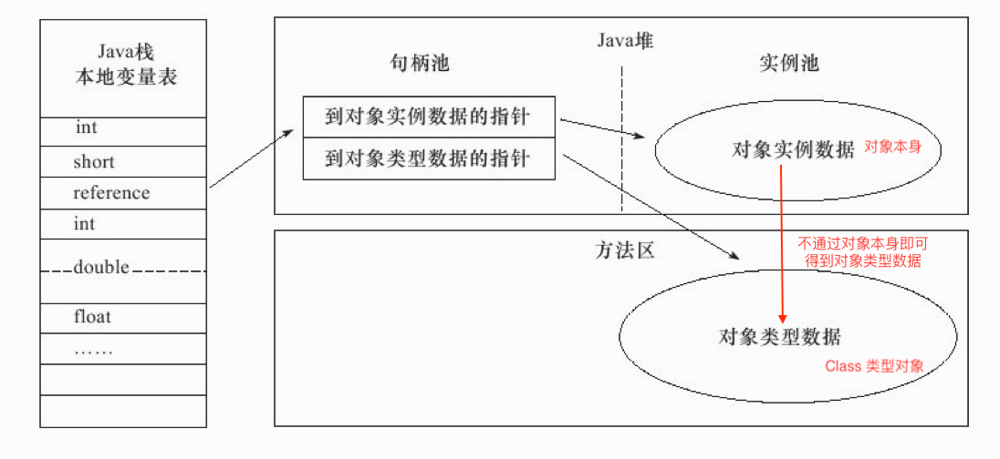

Java 反射小总结
文章目录
Java 反射小总结
1. Java 反射能做什么？
- Java 反射：在运行状态中，能够任意一个类的所有属性和方法，能够调用任意一个对象的的方法和属性；
- Java “正射”：在编写代码编写类的所有属性、方法。
如果要对 Java 的反射机制做一个总结，无外乎以下几个功能：
- 在运行时判断任何一个对象的类型（运行时的类型由 Class 类型实例确定）；
- 在运行时构造任何一个类的对象；
- 在运行时判断任何一个类所具有的成员变量和方法；
- 在运行时调用任意一个对象的方法；
- JDK 版本的动态代理；
2. Java 反射的具体用例
2.1 运行时获取对象的类型
|
|
运行时类型即 Class 类型实例，当拿到此实例后，可以通过此实例进行各种方法调用，Java 的反射机制的运行大多基于此。
为什么 Java 中的所有实例都能通过 getClass() 方法返回其运行时类型 Class 实例？
这是因为 JVM 底层的为引用变量有两个指针：
- 堆内的对象实例指针；
- 方法区的 Class 实例指针。
如下图所示：

2.2 获取类信息：类名、所有方法、所有字段、所有构造器、实现的接口
|
|
2.3 构造任意对象
|
|
className 可以是任意一个类的全限定名，这与我们一般使用 new Foo() 来构造对象可不一样，因为只有在真正运行时才能知道 className 字符串所指向类的具体类型。
注意事项：newInstance() 方法要求被构造的类必须有无参构造版本，否则会跑出异常。
另一方面，我们这里说的是构造任意对象，实际上也包括通过任意构造器来构造对象，而 newInstace() 方法仅仅支持无参构造器显然是不符合要求的。我们可以通过 Constructor 实例来构造任意实例，如下：
|
|
利用 Constructor 实例来构造任意实例大致分为两步：
- 利用 Class 实例得到 Constructor 实例，其仅仅需要输入构造器的入口参数类型。这是因为构造器的名字总是和类名保持一致；
- 通过 Constructor 实例的
newInstance()方法，输入构造器的入口参数就能够创建实例；
2.4 动态执行意方法
|
|
动态执行任意方法分为两个步骤：
- 获得 Method 实例，此实例通过 Class 实例来构造，因为有不同的方法，因此需要方法名，又因为存在方法重载，因此需要方法入口参数的限定；
- 通过 Method 的
invoke()方法来动态执行任意方法，对于调用类的静态方法，第一个参数可以为 null，否则为方法的接收实例；
注意事项，对于 private 修饰的方法我们在类外并不能调用，但是通过额外调用如下语句能够破除这个限制：
|
|
如果不进行这一步，那么会抛出异常。
2.5 动态操作任意属性
|
|
动态操作任何属性也至少分为两步：
- 获得 Field 实例，此实例通过 Class 实例来构造，不同于方法存在重载，字段名唯一，因此输入字段名即可；
- 通过 Filed 实例的
set()方法进行字段的修改，第一个参数为字段所属的类或者实例。当字段为静态字段时，那么set()方法的第一个参数可以为 null；
注意到这一节属性带有任意两个字，这意味着我们通过反射还可以修改 private 以及 final 修饰的字段，只需要执行如下语句：
|
|
3. 反射的执行效率
3.1 利用反射来构造实例的效率
反射除了可以轻而易举地破坏面向对象的类封装，相较于非反射代码执行效率会比较差。
在 Oracle Tutorial 中指出，反射的额外开销的原因为：Because reflection involves types that are dynamically resolved, certain Java virtual machine optimizations can not be performed. Consequently, reflective operations have slower performance than their non-reflective counterparts, and should be avoided in sections of code which are called frequently in performance-sensitive applications.
总结为如下原因：因为类型动态解析，所以特性的 JVM 优化策略无法进行。
下面是一个实验性代码，比较直接构造实例和通过反射构造实例的效率上的差异：
|
|
例子来源：stackoverflow
测试结果如下：
new A(), 11 ns A.class.newInstance(), 11 ns new A(), 3 ns A.class.newInstance(), 6 ns
上述运行结果依次对应于：
- 第一次通过 new 来构造 3 百万个 A 类型实例；
- 第一次通过反射来构造 3 百万个 A 类型实例；
- 第二次通过 new 来构造 3 百万个 A 类型实例；
- 第二次通过反射来构造 3 百万个 A 类型实例；
不管 new 还是反射，我们可以看到第二轮的效率总是好于第一轮，这是因为 JVM 的运行时优化，但是使用反射来构造实例显然优化幅度不大，这也反应了 Oracle Tutorial 的说法。
另一方面，第一轮中 new 和反射构造实例消耗了同样的时间，可见事实上如果不考虑 JVM 的优化，使用 new 关键字和使用反射来构造实例有着近乎相同的效率。
3.2 利用反射来调用方法的效率
利用类似的逻辑，利用如下代码来演示通过 Method.invoke() 以及直接通过方法调用在效率上的差别：
|
|
控制台输出：
a.test(), 24 ns A.class.getMethod(“test()").invoke(a), 214 ns a.test(), 23 ns A.class.getMethod(“test()").invoke(a), 194 ns
从这里可以看出对于方法的调用，利用反射进行方法调用和直接方法调用有着巨大的速度差距，原因在于：
- 直接调用方法的内部调用逻辑是：堆内的对象 —->方法区的 Class 对象 —-> 找到方法指针 —-> 执行方法；
- 利用反射进行方法调用需要这样的几步：构造 Class 对象 —> 通过输入的方法名找到 Class 中的方法 —-> 封装为 Method 实例 —-> 绑定接收方法的对象 —-> 找到方法指针 —-> 执行方法；
就是因为利用反射调用方法需要额外构造非常多的步骤，特别是需要通过方法名来找到 Class 中的方法后封装为 Method 实例是最消耗性能的一步。
3.3 反射性能小节
-
利用反射来构造实例的效率：
-
在不考虑 JVM 优化的情况下，利用反射来构造实例与直接利用 new 关键字来构造实例在执行效率上区别不大。
-
考虑 JVM 优化的情况下，利用反射来构造实例比直接 new 效率几乎差了一倍。
仅仅上述实验，这个效率的量化比例是不准确的，但是性能好坏是能够比较的。
-
-
利用反射来调用方法的效率：
利用反射来调用方法比直接通过
foo.bar()直接方法调用在执行效率上几乎慢了一个数量级，主要是因为需要额外构造 Class、Method 实例，以及通过指针直接找到方法比通过方法名找到方法在效率上高上不少。